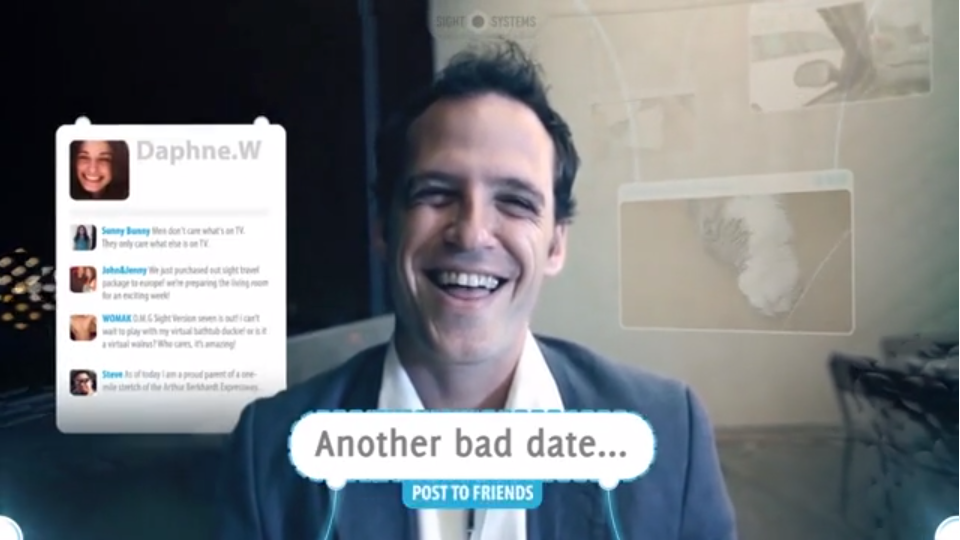
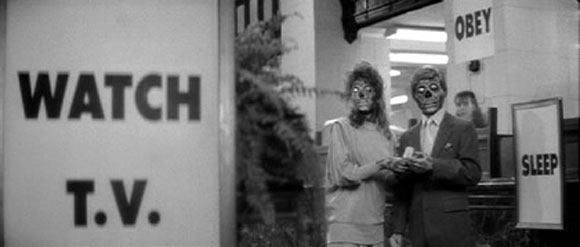
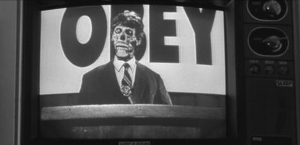
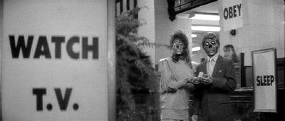
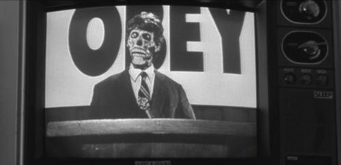
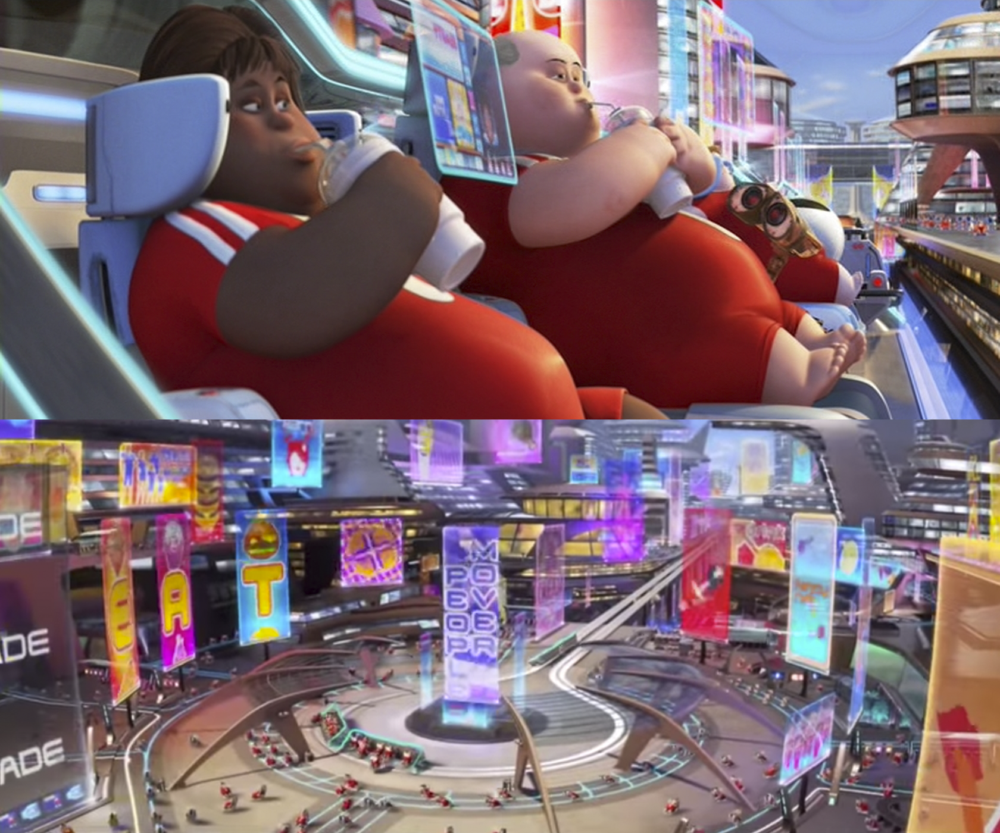
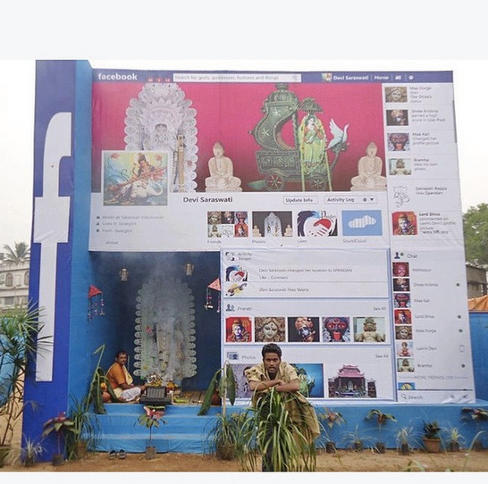
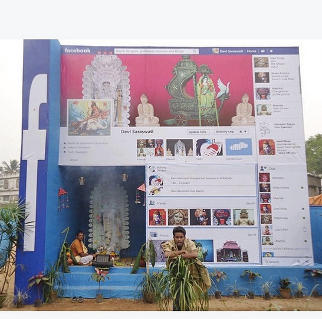

Briefing
Wat is het onderwerp?
Het continu in contact zijn met het internet en opnemen en het delen van data via sociale media is voor ons een realiteit en alledaags geworden. We dragen sociale media elk moment van de dag tegen ons lijf. Het sociale medium past vele manipulatie toe en dat maakt dat wij mensen bepaalt gedrag gaan aannemen.....
Onderzoekvraag
Hoe kan ik het puliek overtuigen dat zei leiden onder het regiem doordat ik het gedrag van mensen vergelijk met (extreme) religeuze of rituelen?
Wat moet het communiceren?
Het communiceert een extreem beeld van hoe wij obsessief onze telefoons en sociale netwerken gebruiken. Ik laat zien hoe we ons volledig overgeven aan technologie. Het is een absurd beeld. Ik geef mijn eigen mening maar geef het publiek ook de ruimte om zijn eigen oordeel of interpretatie te geven. OF: Ik maak een overtuigende presentatie waardoor het voor het publiek geloofwaardig is.
Hoe ga ik dit communiceren?
Ik ga verschillend gedrag vergelijken met religieuze of rituele gewoontes. De vorm is nog onbepaald, maar zou er ongeveer zo uit kunnen komen te zien:
- een altaar van beeldschermen
- lange vlaggen aan het plafond bevestigd
- 10 geboden
- object in marmer
- biecht hokje
zie meer bij Inspiratie
Wat is je eigen motivatie?
Ik heb het gedrag van grote groepen mensen altijd interessant gevonden. Nu iedereen met een apparaat loopt waar ze alles op kunnen doen zie ik dat de mens een ander gedrag gaat aannemen.
Wat is het maatschappelijk belang?
Ik vind dat de mens een bewuste keuzes moet maken. Altijd een vraag een twijfel of kritisch moet blijven naar zijn omgeving en in zijn eigen gedrag. De mens heeft wel bepaalde richtlijnen nodig om te kunnen functioneren in een maatschappij. Maar hoe het nu wordt opgedragen is nog acceptabel?
Is het wel innovatief?
Social media en religie zijn nog niet zo vaak met elkaar vergeleken en voor mij liggen hier de kansen om dit te exploiteren.
Deadline
Generale Dog&Pony - 16 februari
Dog & Pony - 3 maart
Collectieve Werkbespreking - 31 maart
Groen licht presentatie - 18 mei
Eindexamen - 24 juni
Inspiratie
future vision


French graphic designer Nicolas Damiens source


Movie: SIGHT. link
 



A drifter discovers a pair of sunglasses that allow him to wake up to the fact that aliens have taken over the Earth. link
movie: WALL-E
Religion
 

"Many orthodox people speak as though it were the business of sceptics to disprove received dogmas rather than of dogmatists to prove them. This is, of course, a mistake. If I were to suggest that between the Earth and Mars there is a china teapot revolving about the sun in an elliptical orbit, nobody would be able to disprove my assertion provided I were careful to add that the teapot is too small to be revealed even by our most powerful telescopes. But if I were to go on to say that, since my assertion cannot be disproved, it is intolerable presumption on the part of human reason to doubt it, I should rightly be thought to be talking nonsense. If, however, the existence of such a teapot were affirmed in ancient books, taught as the sacred truth every Sunday, and instilled into the minds of children at school, hesitation to believe in its existence would become a mark of eccentricity and entitle the doubter to the attentions of the psychiatrist in an enlightened age or of the Inquisitor in an earlier time."
Russell's teapot. "Is There a God?" link
Put your number in my phone, i wanna get to know you more.
Visueel en vorm
Deadline
gebedSchetsen
Pecha Kucha
pecha kucha in gebed vorm